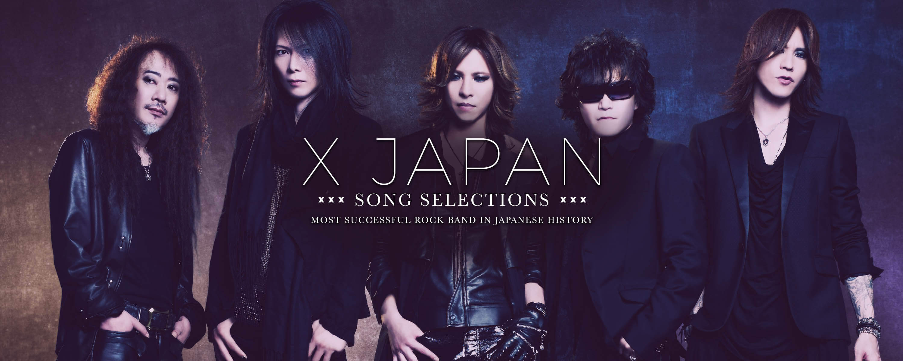

Blue Blood

Blue Blood is an album released by X on April 21, 1989. It contains re-recordings of tracks from the band's debut album Vanishing Vision, "KURENAI" and "UN-FINISHED…" (both with alternate/expanded lyrics/different track names) and leans more towards symphonic rock than its predecessor ("ROSE OF PAIN" includes portions from J.S. Bach's "Fugue in G Minor"). Several songs from the record remained mainstays in X JAPAN's live sets. Remastered editions of Blue Blood and the album Jealousy were released on February 14, 2007, each including a bonus CD with instrumental versions of X JAPAN songs.
We Are X

We Are X is the 2017 soundtrack album to the documentary film We Are X, containing a compilation of songs by Japanese heavy metal band X Japan. It was released on March 3, 2017 by Sony Music's Legacy Recordings. In the first week of the release of the album it reached No. 4 in Japan's Oricon Albums Chart. It also reached No. 1 in the UK Rock & Metal Albums Chart, No. 3 in the UK Soundtrack Albums Chart and No. 27 in the main UK Albums Chart, making it their first appearance on the UK chart.
Jade
Jade is a single by X-Japan released on June 28, 2011 in Europe, North and South America, and on July 13 in Japan and Southeast Asia.
Keep on rockin with X-Japan songs!
Art Of Life

ART OF LIFE is an album released by X Japan on August 28, 1993. It consists of only one song of the same name, which is nearly 29 minutes long, and was written and composed by Yoshiki Hayashi. The heavily orchestrated piece (recorded with the London Royal Philharmonic Orchestra) is partly based on Schubert's unfinished Symphony No. 8 and comprises several passages of varying speed and instrumentation, including eight minutes performed solely on piano